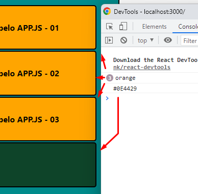

Eventos no React
Evento de click
- onClick={} >>> Atenção ao local onde vai colocar o onClick, deve ser escrito dentro do componente, não na chamada dele.
A sintaxe + local do arquivo estão logo abaixo:
- onClick={sayHello} >>> Chamar o método que será executado quando o botão for pressionado.
Esse método apenas diz 'olá'.

- Criando o método sayHello >>> Lembrar de deixar o método dentro de uma Arrow Function, se não o click não funcionará e o script só rodará uma vez:
Escopo do método:
Eventos atravéz das PROPS. Passando eventos como PROPS pra dentro de um componente
- Adicionando css-inline no componene React:
Lembrar de inicializar como um objeto (chaves amarelas dentro das chaves do style=).
Lembrar de usar CamelCase para a escrita das propriedades.
Lembrar de colocar os valores dentro de áspas.
- Passando 'color' por parâmetro pra Arrow Function:
OBS: Vai pegar o estilo padrão que foi definido no arquivo css desse componente. Se não houver um arquivo css, não vai pegar estilo.
- Criando uma DefaultProp que acesse o componente:
- Criando mais um Card para exemplificar:
- Estilizando apenas esse novo Card:
Criando um evento de click que captura a cor do Card
- Adicionando o escopo da função:
OBS: Isso foi criado no componente Cards.js
- Criando uma Prop ([02] - Pode usar qualquer nome) que chama a função que foi criada acima:
[01] - Atenção pra adicionar a Prop dentro dos parâmetros do Card
[02] - A Prop pode ser nomeada com qualquer nome, mas seja coeso.
[03] - A Prop acima deve executar a chamada da função criada anteriormente. Não usar parênteses.
- Ligando a Prop com os cartões. OBS: No arquivo dos cartões, dentro dos parâmetros da Arrow Function, deve haver a Prop:
- Adicionando o evento de click:
[01] - Adicionando o evento
[02] - Dentro do evento de click, criar uma Arrow Function para evitar que tudo seja executado assim que o site for carregado
[03] - Dentro da Arrow Function, chamar a função de mostrar a cor do Cartão
[04] - Lembrar de usar os parênteses na chamada da função
- Passando para a função o parâmetro 'color':
- Passando para a função o parâmetro 'color':
Guia - Navegar para o arquivo da função
[01] - Passar 'color' por parâmetro para a função showCardColor()
[02] - Capturar a informação de alguma forma. Nesse caso foi pelo console.log, então deve ser passado 'color' para ele também.
- Resultado Final:
